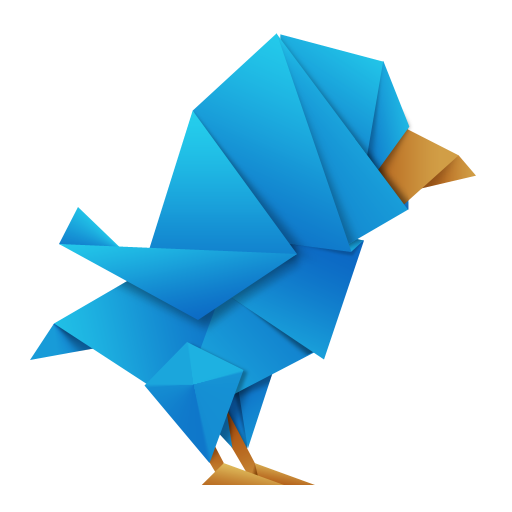
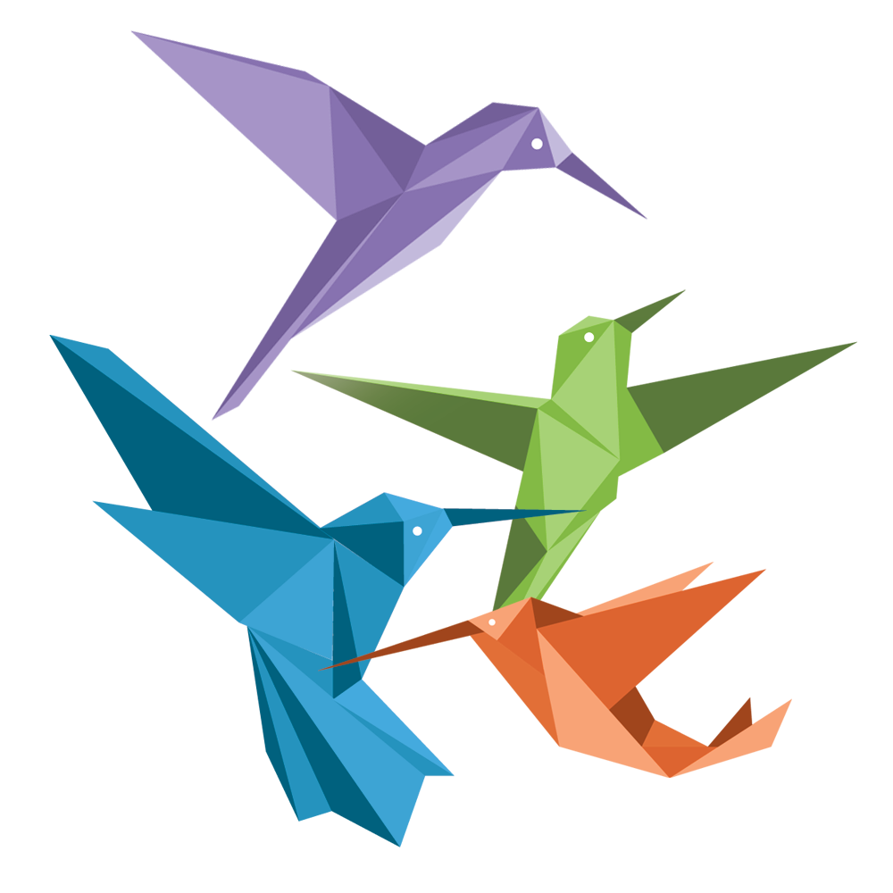

Read On For Blue Macaw Facts!
1. Live up to 50 Years!
2. Scientific Name: Anodorhynchus hyacinthinus 🧪
3. Takes Commitment to Own
∆∇∆∇∆∇∆∇∆∇∆∇∆∇∆∇∆∇∆∇∆∇∆∇∆∇∆∇∆∇∆∇∆∇∆∇∆∇∆∇∆∇∆∇∆∇∆∇∆∇∆∇
Hoot Hoot! Owl Facts Below! ↓↓
1. Owls are Noctural (they sleep in the morning) 😴🌞
2. A Group of Owls is Called a Parliament
3. There are Over 200 Owl Species!
□■□■□■□■□■□■□■□■□■□■□■□■□■□■□■□■□■□■□■□■□■□■□■□■□■□■
↓ So Many Facts About Colors + Birds Just For You ↓
1. Most Birds are Attracted to the Color Red 🎈
2. Most Birds Avoid White, They Just Don't Like It! ❌🥼
3. Birds are Attracted to the Color of Their Feathers. :)